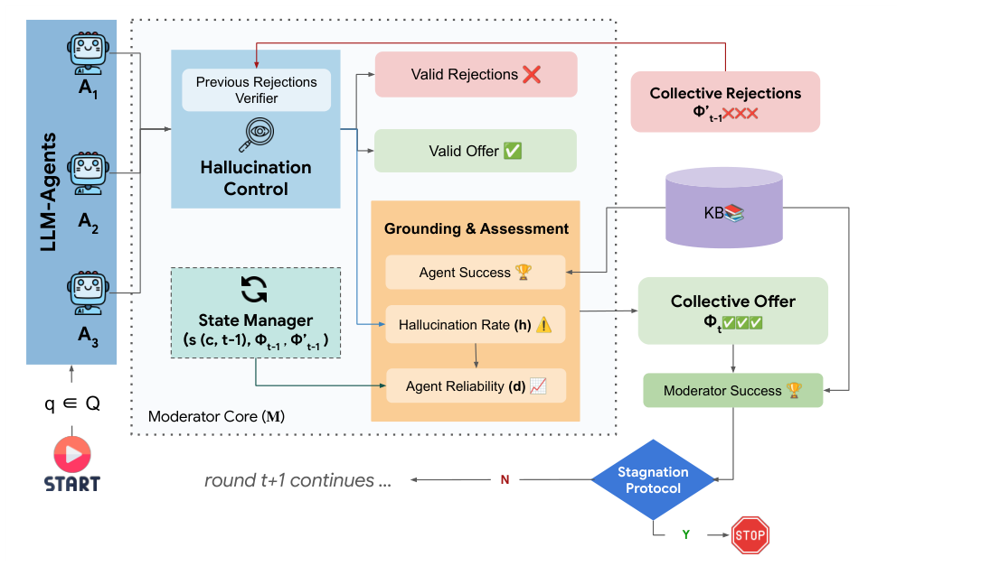

Collab-Rec: An LLM-based Agentic Framework for Balancing Recommendations in Tourism (面向旅游推荐平衡的多智能体 LLM 框架)
- 会议/期刊: ACM Transactions on Recommender Systems (TORS), 2026
- 作者与机构: Ashmi Banerjee, Adithi Satish, Fitri Nur Aisyah, Wolfgang Wörndl (慕尼黑工业大学); Yashar Deldjoo (巴里理工大学)
- 推荐链路定位: 重排 / 端到端生成式（列表级候选生成与修复）
- 研究方向: 对话推荐与智能体仿真 / 去偏公平与工业架构
- 论文原文: https://arxiv.org/abs/2508.15030v7
- 开源代码: https://github.com/ashmibanerjee/collab-rec
TL;DR (1分钟核心速览)
旅游推荐天然是多利益相关方问题：用户要个性化、平台要流行度转化、目的地政府要缓解过度旅游，而单体 LLM 推荐器存在两大失效——流行度坍缩（反复推巴黎/伦敦等头部枢纽）与幻觉（编造或越出目录的城市）。Collab-Rec 将三个目标拆给 Personalization / Popularity / Sustainability 三个 LLM 智能体独立提案，再由一个非 LLM 的确定性 Moderator 做目录接地、诊断打分、拒绝集广播与多轮约束精炼。在 SynthTRIPs 的 900 条分层查询、200 城封闭目录、6 个 LLM 骨干上，Moderator Success 相对单智能体 SASI 提升 10–19 个点（如 Claude 0.465→0.657），Gini 由 0.71 降至 0.64、目录覆盖率 66%→81.5%，且约 4 轮即收敛。
Background & Motivation (背景与核心矛盾)
- 主流范式: 用单体 LLM 一次性 prompt 完成"满足全部约束 + 平衡多目标"的旅游推荐；或采用 manager-centric 多智能体（MACRec、MATCHA）做偏好 elicitation 与解释生成。
- 前人局限: ① 单 prompt 混合多目标会触发目标坍缩，模型隐式偏向热门城市，且对措辞/解码极敏感；② 纯 prompt 方案缺乏可审计的约束执行点，无法保证输出落在固定目录内，幻觉与越界实体难以在部署中拦截。
- 核心洞察 (Key Insight): 目标分解（role specialization）能缓解目标坍缩并扩大候选面，但仅靠分工不够——每个智能体仍会过拟合自身偏见。真正缺的是一个确定性、可复现、可消融的聚合控制点。
- 本文切入点: 用"角色专精生成 + 非 LLM Moderator 接地聚合 + 结构化反馈多轮修复"替代单体推理，把多目标权衡从模型内部黑箱搬到外部显式策略。
Method (核心方法设计)
1. 整体框架 (Overall Architecture)
给定自然语言查询 \(Q\) 与结构化过滤器集 \(\mathcal{F}\)，三个共享同一 LLM 骨干的专家智能体各自输出长度 \(k=10\) 的排序城市列表；Moderator 依据外部知识库（200 城目录）做目录校验、计算三类接地诊断（success / reliability / hallucination），以逆序折扣线性标量化累计城市得分，选出集体提案 \(\Phi_t\) 与集体拒绝集 \(\Phi'_t\)，并把结构化反馈广播给各智能体；智能体在下一轮只允许替换至多 3 个城市（保留 \(\geq k-3\) 个），循环至理想收敛或耐心停滞即停。智能体之间不直接通信，全部协调经由 Moderator 的共享状态完成。
flowchart TD
A["用户查询 Q + 过滤器 F"] --> B["三角色智能体并行提案<br/>Personalization / Popularity / Sustainability"]
B --> C["Moderator: 目录接地 + 诊断打分<br/>success / reliability / hallucination"]
C --> D["逆序折扣标量化 → 集体提案 Φt<br/>拒绝集 Φ't 更新"]
D --> E{"收敛 or 耐心停滞?"}
E -- 否 --> B
E -- 是 --> F["输出 top-k 城市列表"]
2. 关键设计拆解 (Key Designs)
-
逆序折扣的多目标标量化打分（Rank-discounted Scalarization）：痛点在于多目标融合若交给 LLM 会不可复现。Moderator 对城市 \(c\) 在轮次 \(t\) 的增量贡献定义为 $\(\Delta s_{a_i}(c,t)=\frac{1}{\mathrm{rank}_{a_i,t}(c)}\big(\lambda_r r_{a_i,t}+\lambda_d d_{a_i,t}-\lambda_h h_{a_i,t}\big),\quad s(c,t)=s(c,t-1)+\sum_{a_i}\mathbb{I}[c\in L_{a_i,t}]\Delta s_{a_i}(c,t)\)$ 其中 \(r\) 为角色过滤器满足率、\(d\) 为跨轮列表稳定性、\(h\) 为越界/被拒比例，\(\lambda\) 全部固定为 1 以避免在评测集上调参。直觉：多智能体、多轮次的重复背书自然放大长尾候选，而幻觉项直接做减法惩罚，权衡策略完全透明可审计。
-
拒绝集与两种投票策略（Aggressive vs. Majority）：痛点在于 LLM 会反复回吐已被否定的热门城市。对上一轮集体提案中的城市统计"省略票" \(v_t(c)=\sum_{a_i}\mathbb{I}[c\notin L_{a_i,t}]\)，拒绝集按 \(\Phi'_t=\Phi'_{t-1}\cup\{c\in\Phi_{t-1}: v_t(c)\geq\tau\}\) 单调累积，\(\tau=1\) 为 Aggressive、\(\tau=2\) 为 Majority。拒绝集对智能体与 Moderator 同时生效，形成硬性探索压力，这是把推荐质量推向长尾的物理机制。
-
耐心早停与训练/推理开销：无训练、无负采样，全部为推理期编排。终止条件为理想收敛 \(S(\Phi_t)=1\) 或 \(t\geq T_{\min}=3\) 后在窗口 \(p=2\) 内提升小于 \(\epsilon=0.005\)。每轮成本为 \(|\mathcal{A}|=3\) 次并行 LLM 调用加一次确定性 Moderator 扫描，墙钟时间约等于最慢智能体调用加 Moderator 开销。
Experimental Setup & Evaluation Protocol (实验设置与评估协议)
- 数据集与预处理: SynthTRIPs 基准，按"流行度偏好（低/中/高）× 查询复杂度（medium/hard/sustainable）"9 层各采 100 条，共 900 条查询；查询仅由 llama-3.2-90B 生成以规避 Gemini 风格优势。目录为 200 座欧洲城市的封闭知识库。
| 数据集 | #Queries | #Catalog Cities | #Filters | 稀疏度/密度 | 特征/场景说明 |
|---|---|---|---|---|---|
| SynthTRIPs (分层采样) | 900 | 200 | 预算/月份/活动/可持续性等 | 每查询输出 \(k=10\) | 欧洲城市旅行，含流行度与可持续性标注 |
- 数据划分与防穿越 (Splitting Strategy): 无训练阶段，故无传统划分；采用分层采样 + 查询生成模型与评测骨干解耦（排除 Gemini 生成的查询）来防止风格泄漏。
- 排名评测协议 (Ranking Protocol): 非交互日志场景，采用目录接地的约束满足率作为相关性代理——Moderator Success \(S(\Phi_t)=\frac{1}{|\Phi_t|}\sum_{c}\frac{|\mathcal{M}(c)\cap\mathcal{F}|}{|\mathcal{F}|}\)，辅以 Gini、归一化熵、目录覆盖率与智能体可靠性/幻觉率；显著性用配对 \(t\) 检验 + Bonferroni 校正（\(m=3\)，\(\alpha_{\text{corr}}\approx0.017\)）。
- 对比基线与超参设置: RandRec、TopPop、MILP（结构化输入上界参考）、SASI（单智能体单轮）、MASI（多智能体单轮）；6 个骨干（Claude、Gemini、GPT-OSS-20b、Gemma-12b、Olmo-7b、Gemma-4b），temperature 0.5、top-\(p\) 0.95，\(k=10\)，\(T_{\max}=10\)。
Key Experimental Results (实验关键数据)
1. 主实验对比 (Main Results)
Aggressive 拒绝策略下的 Moderator Success（越高越好，加粗为该模型最优）：
| Model | SASI | MASI (M1) | M-Early | M10 | Improv. (vs SASI) |
|---|---|---|---|---|---|
| Claude | 0.465 | 0.594 | 0.657 | 0.620 | +41.3% |
| Gemini | 0.520 | 0.616 | 0.648 | 0.617 | +24.6% |
| GPT-OSS-20b | 0.632 | 0.640 | 0.661 | 0.625 | +4.6% |
| Gemma-12b | 0.616 | 0.618 | 0.647 | 0.617 | +5.0% |
| Olmo-7b | 0.536 | 0.597 | 0.666 | 0.624 | +24.3% |
| Gemma-4b | 0.615 | 0.617 | 0.650 | 0.618 | +5.7% |
| 参考: RandRec 0.501 / TopPop 0.676 / MILP 0.730 |
多样性侧（Aggressive）：GPT-OSS 的 Gini 0.76→0.65、熵 0.78→0.85；Claude 覆盖率 66.0%→81.5%；Gemini 覆盖率 64.5%→74.5%。TopPop 的 Gini 高达 0.95、覆盖率仅 5%（200 城中只推 10 城）。
2. 消融实验 (Ablation Study)
论文以"移除打分组件"与"拒绝策略/轮次"作为消融维度（150 条查询，Gemini 与 Olmo-7b）：
| 配置 | 关键变化 | 结论 |
|---|---|---|
| w/o \(r\)（相关性项） | 约束满足率下降 | 相关性项是接地质量主贡献 |
| w/o \(d\)（可靠性项） | 跨轮抖动加剧 | 稳定性项抑制无意义 churn |
| w/o \(h\)（幻觉惩罚） | 越界/被拒城市回流 | 惩罚项是幻觉控制关键 |
| MASI → M-Early | 单轮→多轮 | 多轮修复带来主要增益 |
| Aggressive → Majority | \(\tau\): 1→2 | 稳定性更平滑但收敛更慢、多样性增益更弱 |
3. 关键实验发现 (Key Findings)
- 多轮修复是主要增益来源，且 4 轮即饱和：平均收敛轮次 3.72–4.01，M-Early 在全部 6 个骨干上均高于 M10（如 Claude 0.657 vs. 0.620），说明后期轮次只增加 churn 而不提升接地满足率——早停不是妥协而是最优操作点。
- 拒绝策略是"稳定性—多样性"的显式旋钮：Aggressive 下 M-Early 对 MASI 的胜率赔率高达 4.89–23.05（Gemma-4b 23.05），但 Majority 下 Gemini/GPT-OSS/Gemma 系列的 M-Early vs MASI 未达 Bonferroni 阈值，证明严格拒绝是多样性增益的必要条件。
- 接地反馈可替代 logit 级约束：Gemini 的智能体幻觉率从第 1 轮 0.002 降至第 2 轮 0.000093 并最终归零，Gemma-4b 从 0.0017 降至 0.000056——纯靠结构化输出 + Moderator 后验校验即可收敛到零幻觉，无需模型侧约束解码。
Highlights, Limitations & Rating (亮点、对比与审稿评价)
- 与代表作对比 (vs. Prior Work): 相比 MACRec/MATCHA 等 manager-centric 多智能体，本文的 Moderator 不是 LLM，从而把"角色分工的收益"与"多一个模型的收益"解耦，可做干净消融；相比 MMR/xQuAD 等后处理重排，本文解决的是上游可行候选集的生成与修复，重排只是其下游一环；相比 MILP，本文在自然语言输入下达到其接地成功率的约 90%（0.66 vs. 0.73），但换来显著更低的集中度（Gini 0.64 vs. 0.78）与更高覆盖率（81.5% vs. 48%）。
- 可迁移亮点: ① "确定性 Moderator + 单调累积拒绝集"可作为任意 LLM 生成式推荐的接地与去偏插件，无需重训；② 逆序折扣的"多智能体重复背书"计分天然偏向长尾，可迁移到内容平台的长尾扶持场景。
- 审稿级局限批判: ① 成本与延迟：本地开源模型 10 轮累计墙钟超 2000 秒（Gemma-4b 2299.6s），且小模型因无效输出更多反而比大模型更慢，工业部署需重估；② 评测效度：以约束满足率代理相关性、无真实用户日志与在线 A/B，且 MILP 上界未被超越，多样性结论仅在 SynthTRIPs 单一合成基准上成立；③ 打分函数为启发式标量化，\(\lambda\) 固定为 1 未做敏感性分析，弱候选可能因所在列表整体较强而获得诊断加成。
- 四维评分: 创新性 ⭐⭐⭐⭐ | 实验扎实度 ⭐⭐⭐⭐ | 方法清晰度 ⭐⭐⭐⭐⭐ | 落地价值 ⭐⭐⭐